4.1 Development of Biotechnology
4.2 Methods of Biotechnology
4.3 Advancements in Modern Biotechnology
4.4 Tools for Genetic Engineering
4.5 Methods of Gene transfer
4.6 Screening for Recombiants
4.7 Transgenic Plants / Genetically Modifi ed Crops
4.8 Applications of Biotechnology.
Biotechnology is the science of applied biological processes. In other words it is science of development and utilization of biological processes, forms and systems for the benefi t of mankind and other life forms. The term biotechnology was coined by Karl Ereky, a Hungarian Engineer in 1919 and has been extended to include any process in which organisms, tissues, cells, organelles or isolated molecules such as enzymes are used to convert biological or other raw materials to products of greater value.
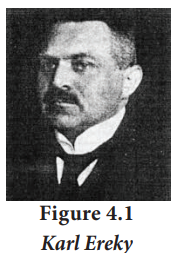
Biotechnology has developed by leaps and bounds during the past century and it's development can be well understood under two main heads namely conventional or traditional biotechnology and modern biotechnology
1. Conventional or traditional biotechnology: This is the kitchen technology developed by our ancestors, and is as old as human civilization. It uses bacteria and other microbes for preparation of dairy products like curd, ghee, cheese and in preparation of foods like idli, dosa, nan, bread and pizza. This conventional biotechnology also extends to preparation of alcoholic beverages like beer, wine, etc.
With the advancement of the science and technology during the 18th century, these kitchen technologies gained scientific c validation.
2. Modern biotechnology
There are two main features of this technology, that diff eventuated it from the conventional technology they are: 1) ability to change the genetic material for getting new products with specifi c requirement through recombinant DNA technology 2) ownership of the newly developed technology and its social impact. Today, biotechnology is a billion-dollar business around the world, wherein pharmaceutical companies, breweries, ago industries and other biotechnology-based industries apply biotechnological tools for their product improvement.
Modern biotechnology embraces all methods of genetic modify cation by recombinant DNA and cell fusion technology. The major focus of biotechnology is on
This unit will reveal the various aspects of modern biotechnology, its products and applications.
The word fermentation is derived from the Latin verb ‘fervere’ which means ‘to boil’. Fermentation refers to the metabolic process in which organic molecules (normally glucose) are converted into acids, gases, or alcohol in the absence of oxygen or any electron transport chain. The study of fermentation, its practical uses is called zymology and originated in 1856, when French chemist Louis Pasteur demonstrated that fermentation was caused by yeast. Fermentation occurs in certain types of bacteria and fungi that require an oxygen-free environment to live. The processes of fermentation are valuable to the food and beverage industries, with the conversion of sugar into ethanol to produce alcoholic beverages, the release of CO2 by yeast used in the leavening of bread, and with the production of organic acids to preserve and flavor vegetables and dairy products.
Bioreactor (Fermentor)
Bioreactor (Fermentor) is a vessel or a container that is designed in such a way that it can provide an optimum environment in which microorganisms or their enzymes interact with a substrate to produce the required product. In the bioreactor aeration, agitation, temperature and pH are controlled. Fermentation involves two process namely upstream and downstream process.
ONE. Upstream process
All the process before starting of the fermenter such as sterilization of the fermenter, preparation and sterilization of culture medium and growth of the suitable inoculum are called upstream process.
2. Downstream process
All the process after the fermentation process is known as the downstream process. This process includes distillation, centrifuging, filtration and solvent extraction. Mostly this process involves the purification of the desired product.
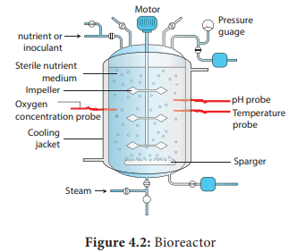
Procedure of Fermentation
Fermentation has industrial application such as:
1. Microbial biomass production
Microbial cells (biomass) like algae, bacteria, yeast, fungi are grown, dried and used as source of a complete protein called ‘single cell protein (SCP)’ which serves as human food or animal feed. 2. Microbial metabolites Microbes produce compounds that are very useful to man and animals. These compounds called metabolites, can be grouped into two categories:
a. Primary metabolites:
Metabolites produced for the maintenance of life process of microbes are known as primary metabolites Example. Ethanol, citric acid, lactic acid, acetic acid.
b. Secondary metabolites:
Secondary metabolites are those which are not required for the vital life process of microbes, but have value added nature, this includes antibiotics example -Amphotericin-B (Streptomyces nodosus), Penicillin (Penicillium chryosogenum) Streptomycin (S. grass), Tetracycline (S. aureofacins), alkaloids, toxic pigments, vitamins etc.
3. Microbial enzymes
When microbes are cultured, they secrete some enzymes into the growth media. These enzymes are industrially used in detergents, food processing, brewing and pharmaceuticals. example protease, amylase, isomerase, and lipase.
4. Bioconversion, biotransformation or modification of the substrate
The fermenting microbes have the capacity to produce valuable products, example conversion of ethanol to acetic acid (vinegar), isopropanol to acetone, sorbitol to sorbose (this is used in the manufacture of vitamin C), sterols to steroids.
Single cell proteins are dried cells of microorganism that are used as protein supplement in human foods or animal feeds. Single Cell Protein (SCP) offers an unconventional but plausible solution to protein deficiency faced by the entire humanity. Although single cell protein has high nutritive value due to its higher protein, vitamin, essential amino acids and lipid content, there are doubts on whether it could replace conventional protein sources due to its high nucleic acid content and slower in digestibility. Microorganisms used for the production of Single Cell Protein are as follows:
The single cell protein forms an important source of food because of their protein content, carbohydrates, fats, vitamins and minerals. It is used by Astronauts and Antarctica expedition scientists.
Spirulina can be grown easily on materials like waste water from potato processing plants (containing starch), straw, molasses, animal manure and even sewage, to produce large quantities and can serve as food rich in protein, minerals, fats, carbohydrate and vitamins. Such utilization also reduces environmental pollution. 250 g of Methylophilus methylotrophus, with a high rate of biomass production and growth, can be expected to produce 25 tonnes of protein.
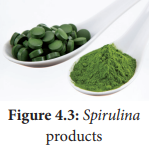
Applications of Single-Cell Protein
Modern biotechnology embraces all the genetic manipulations, protoplasmic fusion techniques and the improvements made in the old biotechnological processes. Some of the major advancements in modern biotechnology are described below.
Genetic engineering or recombinant DNA technology or gene cloning is a collective term that includes different experimental protocols resulting in the modification and transfer of DNA from one organism to another.
The definition for conventional recombination was already given in Unit II. Conventional recombination involves exchange or recombination of genes between homologous chromosomes during meiosis. Recombination carried out artificially using modern technology is called recombinant DNA technology (r-DNA technology). It is also known as gene manipulation technique. This technique involves the transfer of DNA coding for a specific gene from one organism into another organism using specific agents like vectors or using instruments like electroporation, gene gun, liposome mediated, chemical mediated transfers and microinjection.
The steps involved in recombinant DNA technology are:
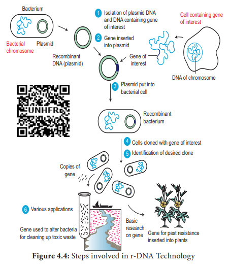
PCR: Polymerase Chain Reaction is a common laboratory technique used to make copies (millions) of a particular region of DNA.
In order to generate recombinant DNA molecule, certain basic tools are necessary. The basic tools are enzymes, vectors and host organisms. The most important enzymes required for genetic engineering are the restriction enzymes, DNA ligase and alkaline phosphatase.
The two enzymes responsible for restricting the growth of bacteriophage in Escherichia coli were isolated in the year 1963. One was the enzyme which added methyl groups to DNA, while the other cut DNA. The latter was called restriction endonuclease. A restriction enzyme or restriction endonuclease is an enzyme that cleaves DNA into fragments at or near specific recognition sites within the molecule known as restriction sites. Based on their mode of action restriction enzymes are classified into Exonucleases and Endonucleases.
a. Exonucleases are enzymes which remove nucleotides one at a time from the end of a DNA molecule. example Bal 31, Exonuclease III.
b. Endonucleases are enzymes which break the internal phosphodiester bonds within a DNA molecule. example Hind II, Eco R I, Pvul, Bam H I, Taq I
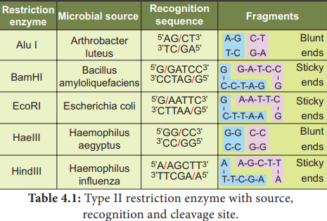
Restriction endonucleases: Molecular scissors
The restriction enzymes are called as molecular scissors. These act as foundation of recombinant DNA technology. These enzymes exist in many bacteria where they function as a part of their defence mechanism called restriction modification system.
There are three main classes of restriction endonucleases: Type one, Type II and Type III, which differ slightly by their mode of action. Only type II enzyme is preferred for use in recombinant DNA technology as they recognise and cut DNA within a specific sequence typically consisting of 4-8 bp. Examples of certain enzymes are given in table 4.1.
The restriction enzyme Hind II always cut DNA molecules at a point of recognising a specific sequence of six base pairs. This sequence is known as recognition sequence. Today more than 900 restriction enzymes have been isolated from over 230 strains of bacteria with different recognition sequences.
This sequence is referred to as a restriction site and is generally –palindromic which means that the sequence in both DNA strands at this site read same in 5 dash – 3 dash direction and in the 3 dash- 5 dash direction
Example: MALAYALAM: This phrase is read the same in either of the directions.
Restriction endonucleases are named by a standard procedure. The first letter of the enzymes indicates the genus name, followed by the first two letters of the species, then comes the strain of the organism and finally a roman numeral indicating the order of discovery. For example, EcoRI is from Escherichia (E) coli (co), strain RY 13 (R) and first endonuclease (I) to be discovered.
Palindromic repeats: A symmetrical repeated sequence in DNA strands
5dash ... CATTATATAATG ... 3dash
3dash ... GTAATATATTAC ... 5dash
Note: That the sequence of the base pairs in the reverse direction when compare to the first sequence.
The exact kind of cleavage produced by a restriction enzyme is important in the design of a gene cloning experiment. Some cleave both strands of DNA through the centre resulting in blunt or flush end. These are known as symmetric cuts. Some enzymes cut in a way producing protruding and recessed ends known as sticky or cohesive end. Such cut are called staggered or asymmetric cuts.
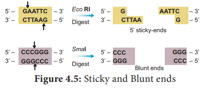
Two other enzymes that play an important role in recombinant DNA technology are DNA ligase and alkaline phosphatase
DNA ligase enzyme joins the sugar and phosphate molecules of double stranded DNA (d s DNA) with 5 dash -PO4 and a 3 dash OH in an Adenosine Triphosphate (ATP) dependent reaction. This is isolated from T4 phage.
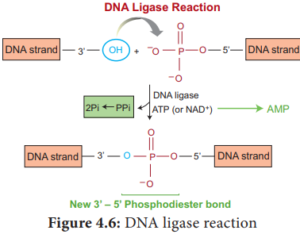
It is a DNA modifying enzyme and adds or removes specific phosphate group at 5 dash terminus of double stranded DNA (d s -DNA) or single stranded DNA (s s-DNA) or RNA. Thus, it prevents self-ligation. This enzyme is purified from bacteria and calf intestine
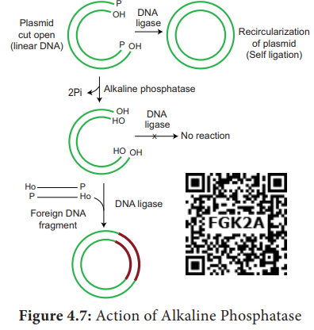
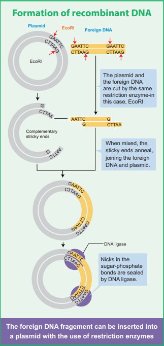
Another major component of a gene cloning experiment is a vector such as a plasmid. A Vector is a small DNA molecule capable of self-replication and is used as a carrier and transporter of DNA fragment which is inserted into it for cloning experiments. Vector is also called cloning vehicle or cloning DNA. Vectors are of two types: one) Cloning Vector, and ii) Expression Vector. Cloning vector is used for the cloning of DNA insert inside the suitable host cell. Expression vector is used to express the DNA insert for producing specific protein inside the host.
Properties of Vectors
Vectors are able to replicate autonomously to produce multiple copies of them along with their DNA insert in the host cell.
The following are the features that are required to facilitate cloning into a vector.
1. Origin of replication (ori): This is a sequence from where replication starts and piece of DNA when linked to this sequence can be made to replicate within the host cells.
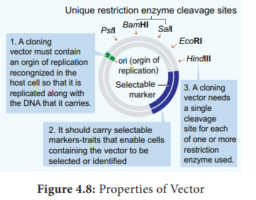
2. Selectable marker: In addition to ori the vector requires a selectable marker, which helps in identifying and eliminating non transformants and selectively permitting the growth of the transformants.
3. Cloning sites: In order to link the alien DNA, the vector needs to have very few, preferably single, recognition sites for the commonly used restriction enzymes.
Types of vectors
Few types of vectors are discussed in detail below:
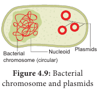
Plasmid
Plasmids are extra chromosomal, self-replicating ds circular DNA molecules, found in the bacterial cells in addition to the bacterial chromosome. Plasmids contain Genetic information for their own replication.
pBR 322 Plasmid
pBR 322 plasmid is a reconstructed plasmid and most widely used as cloning vector; it contains 4361 base pairs. In pBR, p denotes plasmid, Band R respectively the names of scientist Boliver and Rodriguez who developed this plasmid. The number 322 is the number of plasmids developed from their laboratory. It contains ampR and tetR two different antibiotic resistance genes and recognition sites for several restriction enzymes. (Hind III, EcoRI, BamH I, Sal I, Pvu II, Pst I, Cla I), ori and antibiotic resistance genes. Rop codes for the proteins involved in the replication of the plasmid
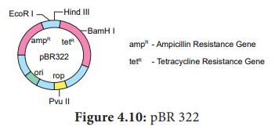
Ti Plasmid
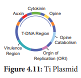
Ti plasmid is found in Agrobacterium tumefaciens, a bacterium responsible for inducing tumours in several dicot plants. The plasmid carries transfer (tra) gene which help to transfer T- DNA from one bacterium to other bacterial or plant cell. It has Onc gene for oncogenecity, ori gene for origin for replication and inc gene for incompatibility. T-DNA of Ti-Plasmid is stably integrated with plant DNA. Agrobacterium plasmids have been used for introduction of genes of desirable traits into plants.
The propagation of the recombinant DNA molecules must occur inside a living system or host. Many types of host cells are available for gene cloning which includes E coli, yeast, animal or plant cells. The type of host cell depends upon the cloning experiment. E coli is the most widely used organism as its genetic make-up has been extensively studied, it is easy to handle and grow, can accept a range of vectors and has also been studied for safety. One more important feature of E coli to be preferred as a host cell is that under optimal growing conditions the cells divide every 20 minutes.
Since the DNA is a hydrophilic molecule,it cannot pass through cell membranes, In order to force bacteria to take up the plasmid, the bacterial cells must first be made competent to take up DNA. This is done by treating them with a specific concentration of a divalent cation such as calcium. Recombinant DNA can then be forced into such cells by incubating the cells with recombinant DNA on ice, followed by placing them briefly at 42 degree selcius (heatshock) and then putting them back on ice. This enables bacteria to take up the Recombinant DNA.
For the expression of eukaryotic proteins, eukaryotic cells are preferred because to produce a functionally active protein it should fold properly and post translational modifications should also occur, which is not possible by prokaryotic cell (E. coli).
The next step after a recombinant DNA molecule has been generated is to introduce it into a suitable host cell. There are many methods to introduce recombinant vectors and these are dependent on several factors such as the vector type and host cell.
For achieving genetic transformation in plants, the basic pre-requisite is the construction of a vector which carries the gene of interest flanked by the necessary controlling sequences, that is the promoter and terminator, and deliver the genes into the host plant. There are two kinds of gene transfer methods in plants. It includes:
then In direct gene transfer methods, the foreign gene of interest is delivered into the host plant without the help of a vector. The following are some of the common methods of direct gene transfer in plants.
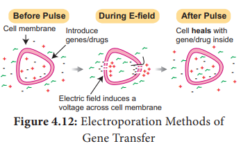
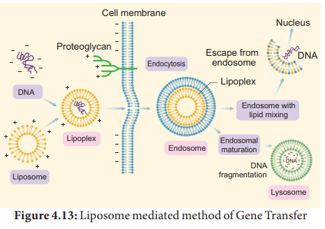
Gene transfer is mediated with the help of a plasmid vector is known as indirect or vector mediated gene transfer. Among the various vectors used for plant transformation, the Ti-plasmid from Agrobacterium tumefaciens has been used extensively. This bacterium has a large size plasmid, known as Ti plasmid (Tumor inducing) and a portion of it referred as T-DNA (transfer DNA) is transferred to plant genome in the infected cells and cause plant tumors (crown gall). Since this bacterium has the natural ability to transfer T-DNA region of its plasmid into
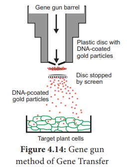
plant genome, upon infection of cells at the wound site, it is also known as the natural genetic engineer of plants.
The foreign gene (e.g., Bt gene for insect resistance) and plant selection marker gene, usually an antibiotic gene like npt II which confers resistance to antibiotic kanamycin are cloned in the T DNA region of Ti-plasmid in place of unwanted DNA sequences. (Figure 4.15)
After the introduction of r-DNA into a suitable host cell, it is essential to identify those cells which have received the r-DNA molecule. This process is called screening. The vector or foreign DNA present in recombinant cells expresses the characters, while the non-recombinants do not express the characters or traits. For this some of the methods are used and one such method is Blue-White colony Selection method.
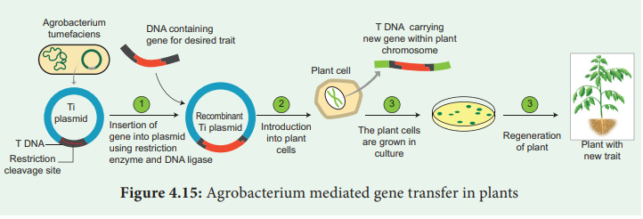
It is a powerful method used for screening of recombinant plasmid. In this method, a reporter gene lac Z is inserted in the vector. The lac Z encodes the enzyme
beta -galactosidase and contains several recognition sites for restriction enzyme. betagalactosidase breaks a synthetic substrate called X-gal (5-bromo-4-chloro-indolyl-beta-D--galacto-pyranoside) into an insoluble blue coloured product. If a foreign gene is inserted into lacZ, this gene will be inactivated. Therefore, no-blue colour will develop (white) because β-galactosidase is not synthesized due to inactivation of lacZ. Therefore, the host cell containing r-DNA form white coloured colonies on the medium contain X-gal, whereas the other cells containing non-recombinant DNA will develop the blue coloured colonies. On the basis of colony colour, the recombinants can be selected.
An antibiotic resistance marker is a gene that produces a protein that provides cells with resistance to an antibiotic. Bacteria with transformed DNA can be identified by growing on a medium containing an antibiotic. Recombinants will grow on these media as they contain genes encoding resistance to antibiotics such as ampicillin, chloro amphenicol, tetracycline or kanamycin, etc., while others may not be able to grow in these media, hence it is considered useful selectable marker
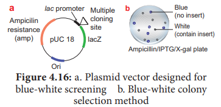
A technique in which the pattern of colonies growing on a culture plate is copied. A sterile filter plate is pressed against the culture plate and then lifted. Then the filter is pressed against a second sterile culture plate. This results in the new plate being infected with cell in the same relative positions as the colonies in the original plate. Usually, the medium used in the second plate will differ from that used in the first. It may include an antibiotic or exclude a growth factor. In this way, transformed cells can be selected.
Electrophoresis is a separating technique used to separate different biomolecules with positive and negative charges.
Principle
By applying electricity (DC) the molecules migrate according to the type of charges they have. The electrical charges on different molecules are variable.
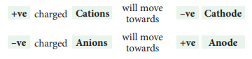
Agarose GEL Electrophoresis
It is used mainly for the purification of specific DNA fragments. Agarose is convenient for separating DNA fragments ranging in size from a few hundred to about 20000 base pairs. Polyacrylamide is preferred for the purification of smaller DNA fragments. The gel is complex network of polymeric molecules. DNA molecule is negatively charged molecule - under an electric field DNA molecule migrates through the gel. The electrophoresis is frequently performed with marker DNA fragments of known size which allow accurate size determination of an unknown DNA molecule by interpolation. The advantages of agarose gel electrophoresis are that the DNA bands can be readily detected at high sensitivity. The bands of DNA in the gel are stained with the dye Ethidium Bromide and DNA can be detected as visible fluorescence illuminated in UV light will give orange fluorescence, which can be photographed.
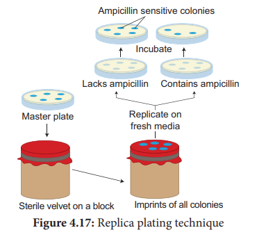
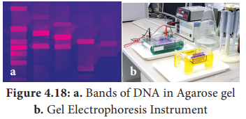
Blotting Techniques Blotting techniques are widely used analytical tools for the specific identification of desired DNA or RNA fragments from larger number of molecules. Blotting refers to the process of immobilization of sample nucleic acids or solid support (nitrocellulose or nylon membranes.) The blotted nucleic acids are then used as target in the hybridization experiments for their specific detection.
Types of Blotting Techniques
Southern Blotting: The transfer of DNA from agarose gels to nitrocellulose membrane.
Northern Blotting: The transfer of RNA to nitrocellulose membrane.
Western Blotting: Electrophoretic transfer of Proteins to nitrocellulose membrane.
Box item:
Agricultural diagnostics refers to a variety of tests that are used for detection of pathogens in plant tissues. Two of the most efficient methods are
1. ELISA (Enzyme Linked Immumo Sorbent Assay)
Elisa is a diagnostic tool for identification of pathogen species by using antibodies and diagnostic agents. Use of ELISA in plant pathology especially for weeding out virus infected plants from large scale planting is well known.
2. DNA Probes
DNA Probes, isotopic and non-isotopic (Northern and Southern blotting) are popular tools for identification of viruses and other pathogens
Southern Blotting Techniques - DNA
The transfer of denatured DNA from Agarose gel to Nitrocellulose Blotting or Filter Paper technique was introduced by Southern in 1975 and this technique is called Southern Blotting Technique.
Steps
The transfer of DNA from agarose gel to nitrocellulose filter paper is achieved by Capillary Action.
A buffer Sodium Saline Citrate (SSC) is used, in which DNA is highly soluble, it can be drawn up through the gel into the Nitrocellulose membrane.
By this process ss-DNA becomes ‘Trapped’ in the membrane matrix.
This DNA is hybridized with a nucleic acid and can be detected by autoradiography.
Autoradiography - A technique that captures the image formed in a photographic emulsion due to emission of light or radioactivity from a labelled component placed together with unexposed film.
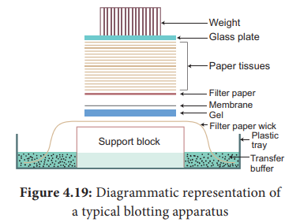
Northern Blot
It was found that RNA is not binding to cellulose nitrate. Therefore, Alwin et al. (1979) devised a procedure in which RNA bands are transferred from the agarose gel into Amino benzyloxymethyl membrane. This transfer of RNA from gel to special filter paper is called Northern Blot hybridization. The filter paper used for Northern blot is Amino Benzyloxymethyl Paper which can be prepared from Whatman 540 paper.
Western Blot
Refers to the electrophoretic transfer of proteins to blotting papers. Nitrocellulose filter paper can be used for western blot technique. A particular protein is then identified by probing the blot with a radio-labelled antibody which binds on the specific protein to which the antibody was prepared.
Target gene is targeting DNA, foreign DNA, passenger DNA, exogenous DNA, gene of interest or insert DNA that is to be either cloned or specifically mutated. Gene targeting experiments have been targeting the nuclei and this leads to ‘gene knock-out’. For this purpose, two types of targeting vectors are used. They are insertion vectors and replacement or trans placement vectors.
1. Insertion vectors are entirely inserted into targeted locus as the vectors are linearized within the homology region. Initially, these vectors are circular but during insertion, become linear. It leads to duplication of sequences adjacent to selectable markers.
2. The replacement vector has the homology region and it is co-linear with target. This vector is linearized prior to transfection outside the homology region and then consequently a crossing over occurs to replace the endogenous DNA with the incoming DNA. The replacement vector has the homology region and it is co-linear with target. This vector is linearized prior to transfection outside the homology region and then consequently a crossing over occurs to replace the endogenous DNA with the incoming DNA.
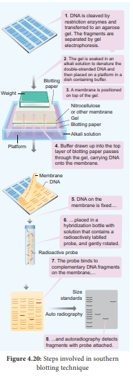
Differences between Blotting Techniques
Table 4.2: Difference between Blotting Techniques
|
Southern blotting |
Northern blotting |
Western blotting |
Name |
Southern name of the inventor |
Northern a misnomer |
Western a misnomer |
Separation of |
DNA |
RNA |
Proteins |
Denaturation |
Needed |
Not needed |
Needed |
Membrane |
Nitrocellulose |
Amino benzyloxymethyl |
Nitrocellulose |
Hybridisation |
DNA-DNA |
RNA-DNA |
Protein-antibody |
Visualising |
Autoradiogram |
Autoradiogram |
Dark room |
Box item: Transfection: Introduction of foreign nucleic acids into cells by non-viral methods.
The whole complement of gene that determine all characteristic of an organism is called genome. The genome may be nuclear genome, mitochondrial genome or plastid genome. Genome of many plants contain both functional and non-expressive DNA proteins. Genome project refers to a project in which the whole genome of plant is analysed using sequence analysis and sequence homology with other plants. Such genome projects have so far been undertaken in Chlamydomonas(algae), Arabidopsis thaliana, rice and maize plants.
Genome content of an organism is expressed in terms of number of base pairs or in terms of the content of DNA which is expressed as c-value.
In recent years the evolutionary relationship between different plant taxa is assessed using DNA content as well as the similarities and differences in the DNA sequence (sequence homology). Based on such analysis the taxa and their relationship are indicated in a cladogram which will show the genetic distance between two taxa. It also shows antiquity or modernity of any taxon with respect to one another (See also Unit-2, Chapter-5 of XI Std.)
Genome editing or gene editing is a group of technologies that has the ability to change an organism’s DNA. These technologies allow genetic material to be added, removed, or altered at particular locations in the genome. Several approaches to genome editing have been developed. A recent one is known as CRISPR-C a s 9, which is short form of Clustered Regularly Interspaced Short Palindromic Repeats and CRISPR- associated protein 9. The CRISPR-C a s 9 system has generated a lot of excitement in the scientific community because it is faster, cheaper, more accurate, and more efficient than other existing genome editing methods.
Rice, was among the first plants to be used to demonstrate the feasibility of CRISPRmediated targeted mutagenesis and gene replacement. The gene editing tool CRISPR can be used to make hybrid rice plants that can clone their seed. Imtiyaz Khand and Venkatesan Sundaresan and colleagues reported in a new study which clearly shows one can re-engineer rice to switch it from a sexual to an asexual mode.
Box item:
Barcode: You might have seen in all books barcoding and also in items you buy in supermarket. This will reveal the identity of the book or item as well the details like prize. Similarily, Barcode in genetic term refer to the identity of the taxon based on its genetic makeup. In practice, it is an optical, machinereadable representation of data which describes about the characters of any plants or any objects.
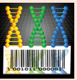
This expression involves transcription and translation. Transcription refers to the copying of genetic information from one strand of the DNA (called sense strand) by RNA. This RNA, as soon as it formed cannot be straight away sent to the cytoplasm to undertake the process of translation. It has to be edited and made suitable for translation which brings about protein synthesis. One of the main items removed from the RNA strand are the introns. All these changes before translation normally take place whereby certain regions of DNA are silence. However, there is an (RNAi) pathway. RNA interference is a biological process in which RNA molecules inhibit gene expression or translation. This is done by neutralising targetd m-RNA molecules.
A simplified model for the RNAi pathway is based on two steps, each involving ribonuclease enzyme. In the first step, the trigger RNA (either d s RNA or m i RNA primary transcript) is processed into a short interfering RNA (s i RNA) by the RNase II enzymes called Dicer and Drosha. In the second step, s i RNAs are loaded into the effector complex RNA-induced silencing complex (RISC). The s i RNA is unwound during RISC assembly and the single-stranded RNA hybridizes with mRNA target. This RNAi is seen in plant feeding nematodes.
Result
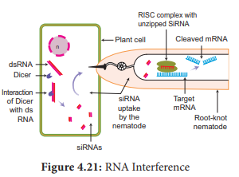
Weeds are a constant problem in crop fields. Weeds not only compete with crops for sunlight, water, nutrients and space but also acts as a carrier for insects and diseases. If left uncontrolled, weeds can reduce crop yields significantly.
Box item: Transgenic plants contain a novel DNA introduced into the genome.
Glyphosate herbicide produced by Monsanto, USA company under the trade name ‘Roundup’ kills plants by blocking the 5-enopyruvate shikimate-3 phosphate synthase (E P S P S) enzyme, an enzyme involved in the biosynthesis of aromatic amino acids, vitamins and many secondary plant metabolites. There are several ways by which crops can be modified to be glyphosate-tolerant.
One strategy is to incorporate a soil bacterium gene that produces a glyphosate tolerant form of E P S P S. Another way is to incorporate a different soil bacterium gene that produces a glyphosate degrading enzyme. Advantages of Herbicide Tolerant Crops
Trade name ‘Basta’ refers to a non-selective herbicide containing the chemical compound phosphinothricin. Basta herbicide tolerant gene PPT (L-phosphinothricin) was isolated from Medicago sativa plant. It inhibits the enzyme glutamine synthase which is involved in ammonia assimilation. The PPT gene was introduced into tobacco and transgenic tobacco produced was resistant to PPT. Similar enzyme was also isolated from Streptomyces hygroscopicus with bar gene encodes for PAT (Phosphinothricin acetyl transferase) and was introduced into crop plants like potato and sugar-beet and transgenic crops have been developed.
1. Bt Cotton
Bt cotton is a genetically modified organism (GMO) or genetically modified pest resistant plant cotton variety, which produces an insecticide activity to bollworm.
Strains of the bacterium Bacillus thuringiensis produce over 200 different Bt toxins, each harmful to different insects. Most Bt toxins are insecticidal to the larvae of moths and butterflies, beetles, cotton bollworms and gatflies but are harmless to other forms of life. The genes are encoded for toxic crystals in the Cry group of endotoxins. When insects attack and eat the cotton plant the Cry toxins are dissolved in the insect’s stomach.
The epithelial membranes of the gut block certain vital nutrients thereby sufficient regulation of potassium ions are lost in the insects and results in the death of epithelial cells in the intestine membrane which leads to the death of the larvae.
Advantages
The advantages of Bt cotton are:
Disadvantages
Bt cotton has some limitations:
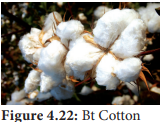
2. Bt Brinjal
The Bt brinjal is another transgenic plant created by inserting a crystal protein gene (Cry1Ac) from the soil bacterium Bacillus thuringiensis into the genome of various brinjal cultivars. The insertion of the gene, along with other genetic elements such as promoters, terminators and an antibiotic resistance marker gene into the brinjal plant is accomplished using Agrobacterium- mediated genetic transformation. The Bt brinjal has been developed to give resistance against Lepidopteran insects, in particular the Brinjal Fruit and Shoot Borer (Leucinodes orbonalis).
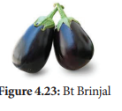
3. Dhara Mustard Hybrid (DMH)
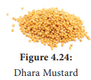
DMH 11 is transgenic mustard developed by a team of scientists at the Centre for Genetic Manipulation of Crop Plants Delhi University under Government sponsored project. It is genetically modified variety of Herbicide Tolerant (HT) mustard. It was created by using “barnase/barstar” technology for genetic modification by adding genes from soil bacterium that makes mustard, a self-pollinating plant. DMH 11 contains three genes namely Bar gene, Barnase and Barstar sourced from soil bacterium. The bar gene had made plant resistant to herbicide named Basta.
Many plants are affected by virus attack resulting in series loss in yield and even death. Biotechnological intervention is used to introduce viral resistant genes into the host plant so that they can resist the attack by virus. This is by introducing genes that produce resistant enzymes which can deactivate viral DNA.
Agrobacterium mediated genetic engineering technique was followed to produce Flavour -Saver tomato, that is retaining the natural colour and flavour of tomato.
Through genetic engineering, the ripening process of the tomato is slowed down and thus prevent it from softening and to increase the shelf life. The tomato was made more resistant to rotting by Agrobacterium mediated gene transfer mechanism of introducing an antisense gene which interferes with the production of the enzyme polygalacturonase, which help in delaying the ripening process of tomato during long storage and transportation.
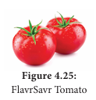
Golden rice is a variety of Oryza sativa (rice) produced through genetic engineering of biosynthesized beta-carotene, a precursor of Vitamin-A in the edible parts of rice developed by Ingo Potrykus and his group. The aim is to produce a fortified food to be grown and consumed in areas with a shortage of dietary Vitamin-A, Golden rice differs from its parental strain by the addition of three beta-carotene biosynthesis genes namely ‘psy’ (phytoene synthase) from daffodil plant Narcissus pseudonarcissus and ‘crt-1’ gene from the soil bacterium Erwinia auredorora and ‘lyc’ (lycopene cyclase) gene from wild-type rice endosperm.
The endosperm of normal rice, does not contain beta-carotene. Golden-rice has been genetically altered so that the endosperm now accumulates Beta-carotene. This has been done using Recombinant DNA technology. Golden rice can control childhood blindness - Xerophthalmia.
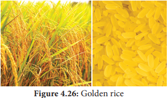
GM Food - Benefits
Risks - believed to
Synthetic polymers are non-degradable and pollute the soil and when burnt add dioxin in the environment which cause cancer. So, efforts were taken to provide an alternative eco-friendly biopolymer. Polyhydroxyalkanoates (P H As) and polyhydroxy butyrate (P H B) are group of degradable biopolymers which have several medical applications such as drug delivery, scaffold and heart valves. P H A s are biological macromolecules and thermoplastics which are biodegradable and biocompatible. Several microorganisms have been utilized to produce different types of P H As including Gram-positive like Bacillus megaterium, Bacillussubtilis and Corynebacterium glutamicum, Gram-negative bacteria like group of Pseudomonas sp. and Alcaligenes eutrophus.
Polylactic acid or polylactide (P L A) is a biodegradable and bioactive thermoplastic. It is an aliphatic polyester derived from renewable resources, such as corn starch, cassava root, chips or starch or sugarcane. For the production of P L A, two main monomers are used: lactic acid, and the cyclic diester, lactide. The most common route is the ring-opening polymerization of lactide with metal catalysts like tin octoate in solution. The metal-catalyzed reaction results in equal amount of d and polylactic acid.
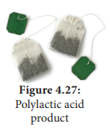
The green fluorescent protein (G F P) is a protein containing 238 amino acid residues of 26.9 kDa that exhibits bright green fluorescence when exposed to blue to ultraviolet range (395 nm). GFP refers to the protein first isolated from the jellyfish Aequorea victoria. GFP is an excellent tool in biology due to its ability to form internal chromophore without requiring any accessory cofactors, gene products, enzymes or substrates other than molecular oxygen. In cell and molecular biology, the GFP gene is frequently used as a reporter of expression. It has been used in modified forms to make biosensors.
Biopharming also known as molecular pharming is the production and use of transgenic plants genetically engineered to produce pharmaceutical substances for use of human beings. This is also called “molecular farming or pharming”. These plants are different from medicinal plants which are naturally available. The use of plant systems as bioreactors is gaining more significance in modern biotechnology. Many pharmaceutical substances can be produced using transgenic plants. Example: Golden rice
It is defined as the use of microorganisms or plants to manage environmental pollution. It is an approach used to treat wastes including wastewater, industrial waste and solid waste. Bioremediation process is applied to the removal of oil, petrochemical residues, pesticides or heavy metals from soil or ground water. In many cases, bioremediation is less expensive and more sustainable than other physical and chemical methods of remediation.Bioremediation an eco-friendly approach and can deal with lower concentrations of contaminants more effectively. The strategies for bioremediation in soil and water can be as follows:
Limitations
Algal Biofuel Algal fuel, also known as algal biofuel, or algal oil is an alternative to liquid fossil fuel, the petroleum products. This is also used as a source of energy-rich oils. Also, algal fuels are an alternative to commonly known biofuel sources obtained from corn and sugarcane. The energy crisis and the world food crisis have initiated interest in algal culture (farming algae) for making biodiesel and other biofuels on lands unsuitable for agriculture. Botryococcus braunii is normally used to produce algal biofuel.
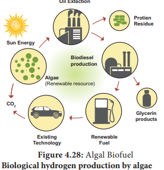
Biological hydrogen production by algae
The biological hydrogen production with algae is a method of photo biological water splitting. In normal photosynthesis the alga, Chlamydomonas reinhardtii releases oxygen. When it is deprived of sulfur, it switches to the production of hydrogen during photosynthesis and the electrons are transported to ferredoxins. [Fe]-hydrogenase enzymes combine them into the production of hydrogen gas.
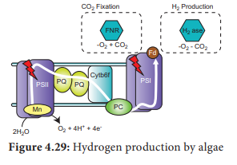
Bioprospecting is the process of discovery and commercialization of new products obtained from biological resources. Bioprospecting may involve biopiracy, in which indigenous knowledge of nature, originating with indigenous people, is used by others for profit, without authorization or compensation to the indigenous people themselves.
Biopiracy
Biopiracy can be defined as the manipulation of intellectual property rights laws by corporations to gain exclusive control over national genetic resources, without giving adequate recognition or remuneration to the original possessors of those resources. Examples of biopiracy include recent patents granted by the U.S. Patent and Trademarks Office to American companies on turmeric, ‘neem’ and, most notably, ‘basmati’ rice. All three products are indigenous to the Indo-Pak subcontinent.
Biopiracy of Neem
The people of India used neem and its oil in many ways to controlling fungal and bacterial skin infections. Indian’s have shared the knowledge of the properties of the neem with the entire world. Pirating this knowledge, the United States Department of Agriculture (USDA) and an American MNC (Multi Nation Corporation) W.R.Grace in the early 90’s sought a patent from the European Patent Office (EPO) on the “method for controlling of diseases on plants by the aid of extracted hydrophobic neem oil”. The patenting of the fungicidal and antibacterial properties of Neem was an example of biopiracy but the traditional knowledge of the Indians was protected in the end.
Biopiracy of Turmeric
The United States Patent and Trademark Office, in the year 1995 granted patent to the method of use of turmeric as an antiseptic agent. Turmeric has been used by the Indians as a home remedy for the quick healing of the wounds and also for purpose of healing rashes. The journal article published by the Indian Medical Association, in the year 1953 wherein this remedy was mentioned. Therefore, in this way it was proved that the use of turmeric as an antiseptic is not new to the world and is not a new invention, but formed a part of the traditional knowledge of the Indians. The objection in this case US patent and trademark office was upheld and traditional knowledge of the Indians was protected. It is another example of Biopiracy.
Biopiracy of Basmati
On September 2, 1997, the U.S. Patent and Trademarks Office granted Patent on “basmati rice lines and grains” to the Texas-based company RiceTec. This broad patent gives the company several rights, including exclusive use of the term 'basmati', as well proprietary rights on the seeds and grains from any crosses. The patent also covers the process of breeding RiceTec’s novel rice lines and the method to determine the cooking properties and starch content of the rice grains.
India had periled the United States to take the matter to the WTO as an infringement of the TRIPS agreement, which could have resulted in major embarrassment for the US. Hence voluntarily and due to few decisions taken by the US patent office, Rice Tec had no choice but to lose most of the claims and most importantly the right to call the rice “Basmati”. In the year 2002, the final decision was taken. Rice Tec dropped down 15 claims, resulting in clearing the path of Indian Basmati rice exports to the foreign countries. The Patent Office ordered the patent name to be changed to ‘Rice lines 867’.
Biotechnology is the science of applied biological process in which there is a controlled use of biological agents such as microorganisms or cellular components for beneficial use. A Hungarian Engineer, Karl Ereky (1919) coined the term biotechnology. Biotechnology broadly categorized into traditional practices and modern practices. Traditional biotechnology includes our ancient practices such as fermentation. Single Cell Protein (SCP) organisms are grown in large quantities to produce goods rich in protein, minerals, fats, carbohydrates and vitamins. The modern biotechnology embraces all the genetic manipulations. The recombinant DNA technology is a technique of modern biotechnology in which transfer of DNA coding for a specific gene from one organism is introduced into another organism using specific agents like vectors or using instruments like electroporation, gene gun, liposome mediated, chemical mediated and micro injection. Other tools are enzymes and host organisms. The enzyme restriction endonuclease is a molecular scissor that cleaves DNA into fragments at or near specific recognition sites with the molecule known as restriction sites. Other enzymes are DNA ligase and alkaline phosphatase. DNA ligase enzyme joins the sugar and phosphate molecules of double stranded DNA. Alkaline phosphatase is an enzyme which adds or removes specific phosphate group of double stranded DNA. A vector is a small DNA molecule capable of self-replication and used as a carrier of DNA inserted in the host cell. Few examples of vectors are plasmid – pBR 322, cosmid – Lambda phage, M thirteen, Phagmid , BAC, YAC, transposon, shuttle vector and expression vector.
After production of recombinant DNA molecule has been generated is introduced into a suitable host cell. Type of host cell depends upon the cloning experiment. E. coli is the most widely used host organism. There are two kinds of gene transfer methods in plants. They are direct or vectorless gene transfer and indirect or vector mediated gene transfer. Direct gene transfer includes chemical mediated gene transfer, micro injection, electroporation. Gene gun method and Liposome mediated method of gene transfer. Indirect or vector mediated gene transfer is a method of gene transfer with the help of a plasmid vector. In this method Ti-plasmid from Agrobactirum tumefeciens has been used extensively for vector mediated gene transfer.
After the introduction of rDNA into a host cell, it is essential to identify those cells which have received the rDNA molecule. This process is called screening. One of the methods of recombinant screening is blue white selection method Replica plating technique in which the pattern of colonies growing on a culture plate is copied. Electrophoresis is a separating technique used to separate different biomolecules.
Blotting techniques are widely used tools for identification of desired DNA or RNA fragments from larger number of molecules. Some of the genetically modified crops are herbicide tolerant – Basta, Dhara mustard, insects’ resistance – Bt crops, flavrSavr – Tomato, Golden rice. Biopolymers are polyhydroxybutyrate (PHB), polylactic acid (PLA) and green fluorescent protein (GFP) is used to make biosensors. Other applications are biopharming, bioprospecting, biomedication and biofuel, etc.
1. Restriction enzymes are
a. Not always required in genetic engineering
b. Essential tools in genetic engineering
c. Nucleases that cleave DNA at specific sites
d. both b and c
2. Plasmids are
a. circular protein molecules
b. required by bacteria
c. tiny bacteria
d. confer resistance to antibiotics
3. EcoRI cleaves DNA at
a. A G G G T T
b. G T A T A T C
c. G A A T T C
d. T A T A G C
4. Genetic engineering is
a. making artificial genes.
b. hybridization of DNA of one organism to that of the others.
c. production of alcohol by using microorganisms.
d. making artificial limbs, diagnostic instruments such as ECG, EEG etc.,
5. Consider the following statements:
one. Recombinant DNA technology is popularly known as genetic engineering is a stream of biotechnology which deals with the manipulation of genetic materials by man invitro
II. pBR322 is the first artificial cloning vector developed in 1977 by Boliver and Rodriguez from E coli plasmid
III. Restriction enzymes belongs to a class of enzymes called nucleases.
Choose the correct option regarding above statements
a.one & II
b.one & III
c. II & III
d. one, II & III
6. The process of recombinant DNA technology has the following steps
1. amplication of the gene
II. Insertion of recombinant DNA into the host cells
III. Cutting of DNA at specific location using restriction enzyme.
IV. Isolation of genetic material (DNA)
Pick out the correct sequence of step for recombinant DNA technology.
a. II, III, IV, one
b. IV, II, III, one
c. one, II, III, IV
d. IV, III, one, II
7. Which one of the following palindromic base sequences in DNA can be easily cut at about the middle by some particular restriction enzymes?
a. 5 dash C G T T C G 3 dash 3 dash A T C G T A 5 dash
b. 5 dash G A T A T G 3 dash 3 dash C T A C T A 5 dash
c. 5 dash G A A T T C 3 dash 3 dash C T T A A G 5 dash
d. 5 dash C A C G T A 3 dash 3 dash C T C A G T 5 dash
8. pBR 322, BR stands for
a. Plasmid Bacterial Recombination
b. Plasmid Bacterial Replication
c. Plasmid Boliver and Rodriguez
d. Plasmid Baltimore and Rodriguez
9. Match the following:
Column A |
Column B |
1 Exonuclease |
a. adds or remove phosphate |
2 Endonuclease |
b. binding the DNA fragments |
3 Alkaline Phosphatase |
c. cut the DNA at terminus |
4 Ligase |
d. cut the DNA at middle |
A) a b c d
B) c d b a
C) a c b d
D) c d a b
10. In which techniques Ethidium Bromide is used?
a. Southern Blotting techniques
b. Western Blotting techniques
c. Polymerase Chain Reaction
d. Agrose Gel Electroporosis
11. Assertion: Agrobacterium tumifaciens is popular in genetic engineering because this bacteriumis associated with the root nodules of all cereals and pulse crops
Reason: A gene incorporated in the bacterial chromosomal genome gets atomatically transferred to the cross with which bacterium is associated.
a) Both assertion and reason are true. But reason is correct explanation of assertion.
b) Both assertion and reason are true. But reason is not correct explanation of assertion.
c) Assertion is true, but reason is false.
d) Assertion is false, but reason is true.
e) Both assertion and reason are false.
12. Which one of the following is not correct statement.
a) Ti plasmid causes the bunchy top disease
b) Multiple cloning sites is known as Polylinker
c) Non-viral method transfection of Nucleic acid in cell
d) Polylactic acid is a kind of biodegradable and bioactive thermoplastic.
13. An analysis of chromosomal DNA using the southern hybridisation technique does not use
a) Electrophoresis
b) Blotting
c) Autoradiography
d) Polymerase Chain Reaction
14. An antibiotic gene in a vector usually helps in the selection of
a) Competent cells
b) Transformed cells
c) Recombinant cells
d) None of the above
15. Some of the characteristics of Bt cotton are
a) long fibre and resistant to aphids
b) medium yield, long fibre and resistant to beetle pests
c) high yield and production of toxic protein crystals which kill dipteran pests.
d) High yield and resistant to ball worms
16. How do you use the biotechnology in modern practice?
17. What are the materials used to grow microorganism like Spirulina?
18. You are working in a biotechnology lab with a becterium namely E. coli. How will you cut the nucleotide sequence? explain it.
19. What are the enzymes you can used to cut terminal end and internal phospho di ester bond of nucleotide sequence?
20. Name the chemicals used in gene transfer.
21. What do you know about the word pBR332?
22. Mention the application of Biotechnology.
23. What are restriction enzyme. Mention their type with role in Biotechnology.
24. Is there any possibilities to transfer a suitable desirable gene to host plant without vector? Justify your answer.
25. How will you identify a vector? 26. Compare the various types of Blotting techniques.
27. Write the advantages of herbicide tolerant crops.
28. Write the advantages and disadvantages of Bt cotton.
29. What is bioremediation? give some examples of bioremediation.
30. Write the benefits and risk of Genetically Modified Foods.
3 dash Hydroxy end: The hydroxyl group attached to 3’ carbon atom of sugar of the terminal nucleotide of a nucleic acid.
Bacterial artificial chromosomes (BAC): A cloning vector for isolation of genomic DNA constructed on the basis of F-factor.
Chimeric DNA: A recombinant DNA molecule containing unrelated genes.
Cleave: To break phosphodiester bonds of dsDNA, usually with a restriction enzyme.
Cloning site: A location on a cloning vector into which DNA can be inserted.
Cloning: Incorporation of a DNA molecule into a chromosomal site or a cloning vector.
Cloning Vector: A small, self-replicating DNA inserted in a cloning gene.
COS sites: The 12-base, single strand, complementary extension of phage lambda (1) DNA.
DNA Polymerase: An enzyme that catalyses the phosphodiester bond in the formation of DNA.
Endonucleases: An enzyme that catalyses the cleavage of DNA at internal position, cutting DNA at specific sites.
Genome: The entire complement of genetic material of an organism.
Insert DNA: A DNA molecule incorporated into a cloning vector.
Ligase: An enzyme used in genetic engineering experiment to join the cut ends of ds-DNA.
M-13: AssDNA bacteriophage used as vector for DNA sequencing.
Phagemid: A cloning vector that contains components derived from both phage DNA and plasmid
Plasmid: Extrachromosomal, self-replicating, circular ds-DNA containing some non-essential genes.
Restriction map: A linear array of sites on DNA cleaved by various restriction enzymes.
Shuttle Vector: A plasmid cloning vector that can replicate in two different organisms due to the presence of two different origin of replication OrginiEUK and OriginE. coli
Taq polymerase: A heat stable DNA polymerase isolated from a thermophilic bacterium Thermus aquaticus.
Vectors: Vehicles for transferring DNA from one cell to another.
Biofuel: Fuels like hydrogen, ethanol and methanol produced from a biological source by the action of microorganisms.
Bioleaching: Process of using microorganisms to recover metals from their ores or contaminant environment
Bioremediation: Process of using organisms to remove or reduce pollutants from the environment.
Green Technology: Pollution-free technology in which pollution is controlled at source.
Phytoremediation: Use of certain plants to remove contaminants or pollutants from the environment (soil, water or air).
Recombinant: Cell / Organism formed by a recombination of genes.
Transformation: Process of transferring a foreign DNA into a cell and changing its genome.
Vector: Agent used in recombinant DNA technique to carry new genes into foreign cells.
Wild Type: Natural form of organisms.
Historical Perspective
Th e major historical events for the development of Biotechnology, as an interdisciplinary fi eld with multidisciplinary applications are listed below:
Before Common Era
6000 BC – 3000 BC – Bread making, fermentation of fruit juices and plant exudates to produce alcoholic beverages using yeast.
Pre – 20th Century
1770 – Antoine Lavoisier gave chemical basis of alcoholic fermentation.
1798 – Edward Jenner uses first viral vaccine to inoculate a child from smallpox.
1838 – Protein discovered, named and recorded by Gerardus Johannes Mulder and Jons Jacob Berzelius.
1871 – Ernst Hoppe, Seyler discovered enzyme invertase, which is still used for making artificial sweeteners.
1876 – Louis Pasteur identified role of microorganisms in fermentation.
20th Century
1919 – The term biotechnology was coined by Karl Ereky
1928 – Discovery of Penicillin by Alexander Fleming
1941 – Experiment with Neurospora crassa resulting in one gene one enzyme hypothesis by George Beadle and Edward Tatum.
1944 – Identification of DNA as the genetic material Avery–MacLeod–McCarty
1953 – Discovery of double helix structure of DNA by James Watson and Francis Crick.
1972 – Discovery of Restriction enzymes by Arber, Smith and Nathans.
1973 – Fragmentation of DNA-combined with Plasmid DNA, r-DNA technology - Genetic engineering -Modifi ed gene by Stanley Cohen, Annie Chang, Robert Helling and Herbert Boyer.
1975 – Production of Monoclonal antibodies by Kohler and Milstein
1976 – Sanger and Gilbert developed techniques to sequence DNA
1978 – Production of human insulin in E.Coli
1979 – Development of Artificial gene – functioning within the living cells by H.G. Khorana
1982 – U.S approved humulin (human insulin) the first pharmaceutical product of r- DNA technology, for human use.
1983 – Use of Ti plasmids to genetically transform plants
1986 – Development of Polymerase Chain Reaction (PCR) technology by Kary Mullis.
1987 – Gene transfer by biolistic transformation
1992 – First chromosomes of yeast is sequenced
1994 – U.S approved the first Genetically Modified food: Flavr Savr tomato.
1997 – The first transgenic animal, mammalian sheep, Dolly developed by nuclear cloning by Ian Wilmet.
2000 – First plant Genome of Arabidopsis thaliana sequenced
21st Century
2001 – Human genome Project creates a draft of the human genome sequence.
2002 – First crop plant genome sequenced in Oryza sativa
2003 – Human genome project is completed, providing information on the locations and sequence of human genes on all 46 chromosomes.
2010 – Sir Robert G. Edwards developed in vitro fertilization in animals.
2016 – Stem cells injected into stroke patient’s re enable patient to walk – Stem cell therapy
2017 – Blood stem cells grown in the lab.
2018 – James Allison and TasukuHonjo discovered protein found in immune cells. Th is found a new role in cancer therapy
More vectors to know
Cosmid
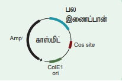
Cosmids are plasmids containing the ‘cos’ - Cohesive Terminus, the sequence having cohesive ends. They are hybrid vectors derived from plasmids having a fragment of lambda phage DNA with its Cos site and a bacterial plasmid.
Bacteriophage Vectors
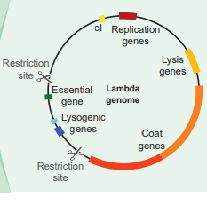
Bacteriophages are viruses that infect bacteria. The most commonly used E. coli phages are l phage (Lambda phage) and M13 phage. Phage vectors are more efficient than plasmids - DNA upto 25 Kb can be inserted into phage vector. Lambda genome: Lambda phage is a temperate bacteriophage that infects Escherichia coli. The genome of lambda-Phage is 48502 bp long, that is 49Kb and has 50 genes
Phagemid Vectors
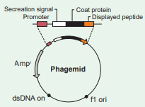
Phagemids are reconstructed plasmid vectors, which contain their own origin - ‘ori’ gene and also contain origin of replication from a phage. pBluescript SK (+/–) is an example of phagemid vector
Bacterial Artificial Chromosome (BAC) Vector
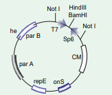
BAC is a shuttle plasmid vector, created for cloning large-sized foreign DNA. BAC vector is one of the most useful cloning vectors in r-DNA technology they can clone DNA inserts of upto 300 Kb and they are stable and more user-friendly.
Yeast Artificial chromosome (YAC vector)
YAC plasmid vector behaves like a yeast chromosome, which occurs in two forms, that is circular and linear. The circular YAC multiplies in Bacteria and linear YAC multiplies in Yeast Cells
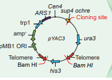
Shuttle Vectors
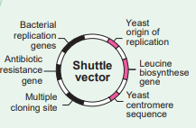
The shuttle vectors are plasmids designed to replicate in cells of two different species. These vectors are created by recombinant techniques. The shuttle vectors can propagate in one host and then move into another host without any extra manipulation. Most of the Eukaryotic vectors are Shuttle Vectors.
Interdisciplinary Fields of Biotechnology
Biotechnology is one of the most important applied interdisciplinary sciences of the 21st century. It is the trusted area that enables us to find the beneficial way of life. Biotechnology has wide applications in various sectors like agriculture, medicine, environment and commercial industries.
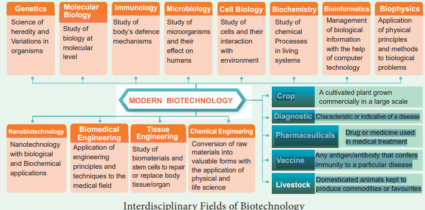
ICT Corner
Principles and Processes of Biotechnology
BIO TECH STUDY APP
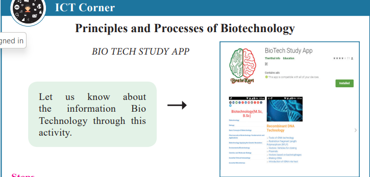
Steps
• Type the URL or scan the QR code to open the activity page.
• Click on the topic to know in detail.
• To know the sub topics in detail, click on the dots in top right corner.
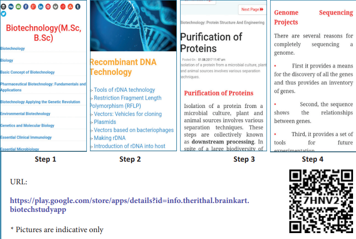
URL: https://play.google.com/store/apps/details?id=info.therithal.brainkart.biotechstudyapp
The learner will be able to